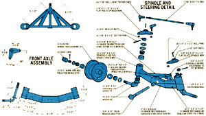
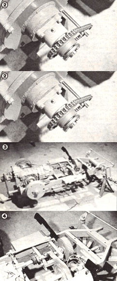
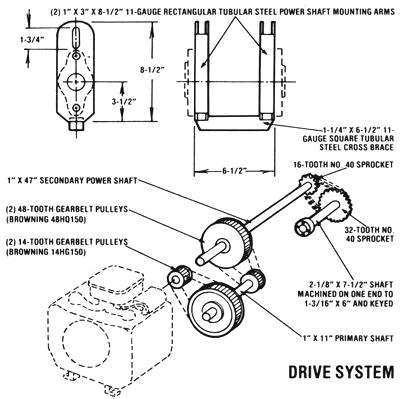
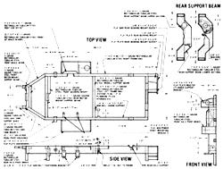

Mother's Mini-Tractor (Part I)
The Mother Earth News editors
July/August 1982
Gardening, logging, lawn care, and snowplowing all add up tp big bucks, unless you build...
Home gardening is presently enjoying a steady increase in popularity. And we suspect that as the economy worsens, and as greater numbers of people begin to take a discriminating look at the often questionably safe methods and materials used in the production of commercially grown fruits and vegetables, the practice of raising-your-own will become even more widespread.
Naturally, if this backyard boom continues, more and more folks-green thumbs and greenhorns alike-will be searching for ways to ease their gardening chores . . . and many of them will more than likely find themselves in their local dealers' showrooms, eyeing the latest crop of pint-sized, 12- to 20-horsepower tractors.
And, of course, the past few years of inflation have taken their toll within the outdoor power-equipment industry. Tractors that might have been available for around $3,300 not long ago can't be touched today for much less than $4,500!
Now don't get us wrong . . . most of these mechanical mules are still good buys. In fact, the newest workhorses generally sport features and improvements that allow their operators to handle everyday plowing, tilling, and mowing chores with even less effort than was required, using similar machines, just a few years ago. Unfortunately, the hard truth is that simple economics may prevent many people-especially those just starting out with a newly acquired parcel of land-from taking advantage of the industry's latest offerings.
HOMEMADE VERSUS STORE-BOUGHT
There is an alternative, however. If you [1] feel comfortable fabricating metal goods, [2] own or have access to the equipment necessary to make the parts for such an undertaking (a cutting torch, an arc welder, a metal grinder, and a large-chuck power drill are a few of the major tools you'll need, to start with), and [3] are prepared to spend a good bit of time planning and assembling an admittedly involved project . . . then you can build a basic garden tractor that'll be every bit as good as (and, in some cases, far better than) those available from the manufacturers today. And you can do it at a cost that won't quite touch the $2,000 mark!
Interestingly enough, our whole tractor project resulted from a need that had to be filled. When research staffer Clarence Goosen purchased a small spread with the intention of settling on it, he found himself-like many folks in the same situation-caught between his desire to get the land into production (which would require the help of a small tractor that he didn't have) and the financial pressure that usually accompanies the acquisition of property.
Well, Clarence's solution was obvious: By making his own compact tractor, the handyman decided-using salvaged auto parts, a small air-cooled engine, an assortment of sheet metal and steel stock, and some off-the-shelf components-he'd be able to have a machine that'd be self-designed to suit his needs perfectly, and still wind up paying only a fraction of the going retail price.
Now you may well wonder why he didn't simply buy a used tractor at a reasonable price . . . and the answer lies in the fact that the great majority of the previously owned equipment that was available was either far too big (even a 28-horsepower mid-sized unit would have overwhelmed his garden), still too expensive (late-model diesel minitractors command a sizable amount in the resale market), or just not up to the work that lay before it (some socalled garden tractors are little more than glorified lawn mowers and simply can't take the abuse that comes with working even a small farmstead).
Additionally (Clarence figured), a workhorse made from a collection of readily available components would have the decided advantage of being easy and inexpensive to repair. For example, one of the key parts of Goosen's mini-tractor is a Volkswagen beetle transaxle . . . a dime-a-dozen item which should be available, at reasonable cost, from salvage yards across the nation.
NUTS AND BOLTS
SPINDLE AND STEERING DETAIL
click here to enlarge
Uppermost in Clarence's mind, as he designed MOTHER's mini-tractor, was his desire to keep everything simple and functional. The machine was built around two main components: the VW transaxle mentioned before . . . and a Kohler horizontally opposed, two-cylinder, air-cooled engine (Model KT17) rated at 17 horsepower. (Information about the Kohler powerplant is available from the Kohler Co., Dept. TMEN, Highland Drive, Kohler, Wisconsin 53044, or from your local dealer. Look in the Yellow Pages under "Engines-Gasoline".)
Both of these fundamentals proved to be excellent choices, too. The transaxle is low in cost, serviceable, and compact . . . while the engine's design, low profile, and reliability seemed almost made for garden work. However, should you decide to alter either of these components (perhaps because you already have a powerplant or a conventional differential drive on hand), you'll find that even though the body parts will most likely have to be redesigned, the basic chassis will work without modifications (it may require some minor "stretching", though).
Because of space limitations, we can't provide step-by-step details on every aspect of the tractor's construction (that'd likely take up a goodly hunk of this issue), but we can give you a pretty fair idea of how it was put together . . . and point out some areas in which we saved money or fabricated a custom part from common hardware.
The frame consists of 16 feet of 1" X 3" tubular steel, and the motor mount crossmembers are made from 1-1/4" square stock. Our tractor's front axle assembly-which is simply more 1" X 3" cut and welded into a bow shape and strengthened with additional 1-1/4" tubular steel-pivots on a central longitudinal axle to allow for the uneven terrain that the tractor will surely encounter.
The steering system is straightforward and designed to last indefinitely if given proper maintenance. Clarence formed the canted spindle housings from 5-1/4" sections of 21/2"-diameter Schedule 160 pipe which he welded to the ends of the axle, and the spindles themselves are 13" pieces of 3/4" cold-rolled steel rod bent to shape and threaded at the ends. Rather than use spindle bushings-as some manufacturers of economy-priced tractors do-we chose to utilize tapered roller bearings for additional reliability and smoother performance.
The two spindle arms were cut from 1/4" flat plate and tied together with automotive steering linkage ball joints threaded onto a 7/16" steel rod. The drag link is of a similar design and fastens directly to the pitman arm of a standard Volkswagen steering assembly. (Suggestion: If you're able to buy a wrecked, junked, or engineless VW beetle for a reasonable price, the car will-assuming its running and steering gear are in good shape-probably provide you with many of the parts you'll need for this project at a lower cost than the same items would set you back if bought separately.)
Moving to the rear end of the tractor-to-be, we made some modifications to the VW transaxle to allow it to rest comfortably on the frame rails. Since the world's most popular car has undergone a few changes in its multidecade life span, your junker might not have exactly the same dimensions or gear ratios as did ours . . . but all that really matters is that the axle shafts be sectioned, or cut, and rejoined . . . making the component's total width such that the hubs' mounting flanges meet the outer edge of the frame.
To strengthen the individual axle shafts, we cut a 5" length of pipe (having about the same diameter as the axles) for each one, then split both pieces lengthwise. By hammering the halves over the axles' curved surfaces at the weld joints (to shape the pipe), then welding each half-collar separately to the joints, to the shaft material on either side of them, and to its other half, you'll have two tubular reinforcing collars . . . each of which is secured to the joint and the shaft.
In keeping with its projected use as a real working garden tractor, Goosen's brainchild features fairly large agricultural-style wheels and tires all around. The front rubber is 16 X 6.50 X 8 mounted on rims purchased from the Martin Wheel Company (Dept. TMEN, P.O. Box 157, Tallmadge, Ohio 44278). To equip the rear, we had to combine two different manufacturers' rims. Each wheel comprises the center portion of a VW rim and the outer ring of an 8.50 X 15 truck unit. Since, in their original form, all the wheels were riveted at their joints, it was a simple matter to grind and punch out the fasteners, weld the centers of the VW components to the outer portion of the truck wheels, and fill the rivet holes in the rims' inner faces.
Because the Volkswagen transmission is geared for travel at highway speeds, rather than for agricultural purposes, we had to step down the ratio in the drive between the engine and the transaxle assembly to 8.85:1. To accomplish this, we used a series of toothed-belt pulleys connected to 1 " jackshafts riding in supported bearings. The final drive is a chainand-sprocket arrangement, and fastens to the clutch input shaft.
(Note: The toothed-belt Gilmer drives that we used are reliable-but expensive-components. It's possible to substitute conventional sprockets and chains for those parts, but be aware that the engine crankshaft may spin at an RPM rate greater than that recommended for some chains.)
Since the "crank" was originally mated with the clutch (and, of course, we did not use the VW powerplant), we had to have a machinist make an adapter coupling and thread it with a 28mm, 1.5-pitch tap. We also had him cut keyways into the power shafts to accept the pulleys and sprockets.
Then, to support the shaft and its bearing, we cut and drilled a 1/2" plate-using the VW bellhousing as a template-before welding a 5"diameter, 1-1/2"-long section of Schedule 40 pipe to its center. A 3/8" X 5-1/2" circular flat plate, welded to the end of this pipe, served as a bearing mount . . . and the whole assembly was shimmed out to the proper distance from the bellhousing with a 1/8" flat metal spacer, template-cut and - bored to match the main plate.
THERE'S MORE TO FOLLOW
REAR AND SUPPORT BEAM
click here to enlarge
Thus far, we've described the bare-bones tractor and running gear. In our next issue, we'll detail the fabrication of the fuel tank and the sheet-metal parts (and show you a design for a manual bending brake that costs far less than a commercial model) . . . finish up the braking and electrical systems . . . and tell you how we built our threepoint hitch and hydraulic lift, as well as the optional power take-off arrangement for use with specialized implements.
So take a good look at the photos and illustrations accompanying this article, and keep an eye open for bargain buys on small engines and Volkswagen components . . . with some luck you may be able to catch up with us before the next issue reaches your home!
EDITOR'S NOTE: Since space limita tions prevent a detailed description of every phase of this project's construction, MOTHER's research staffers are in the process of putting together-for those of you who might want more details than the essentials that appear in the magazine-step-by-step, illustrated plans for our tractor. The on-sale date of these construction prints will be announced in next issue's article, after final testing of the tractor and its implements has been completed.
MANUFACTURERS OF GARDEN TRACTORS (12-20 HORSEPOWER)
For anyone who might not feel up to tackling a project of this magnitude but is considering the purchase of a working garden tractor, we've compiled the following list of manufacturers. Ideally, you should contact your local dealer for specifics . . . however, the firms named below will send product information upon request.
Allis-Chalmers Corporation
Lawn and Garden Equipment
Dept. TMEN, P.O. Box 512
Milwaukee, Wisconsin 53201
Ariens Company
Dept. TMEN, 655 West Ryan Street
Brillion, Wisconsin 54110
The Bolens Corporation
Dept. TMEN, 215 South Park Street
Port Washington, Wisconsin 53074
Deere & Company
Don Schuberg
Consumer Products Division
Dept. TMEN, John Deere Road
Moline, Illinois 61265
Engineering Products Company
Dept. TMEN, P.O. Box 1510
Waukesha, Wisconsin 53187
Ford Tractor and Implement Operations
Dept. TMEN, 2500 East Maple Road
Troy, Michigan 48084
Gilson Brothers Company
Dept. TMEN, P.O. Box 152
Plymouth, Wisconsin 53073
Gravely International, Inc.
Dept. TMEN, 1 Gravely Lane
Clemmons, North Carolina 27012
International Harvester
Equipment Group, Dept. TMEN
401 North Michigan Avenue
Chicago, Illinois 60611
J I Case, A Tenneco Company
Outdoor Power Equipment Division
Dept. TMEN, 119 South First Street
Winneconne, Wisconsin 54986
Kubota Tractor Corporation
Dept. TMEN, 550 West Artesia
Compton, California 90220
Massey-Ferguson, Inc.
Dept. TMEN, 1901 Bell Avenue
Des Moines, Iowa 50315
Mitsubishi Tractor Division
Sumitomo Corporation of America
Dept. TMEN, 345 Park Avenue
New York, New York 10022
Sears, Roebuck and Company
Dept. 703 40-15 (TMEN)
Sears Tower
Chicago, Illinois 60684
Speedex Tractor Company
Dept. TMEN, 367 North Freedom
Ravenna, Ohio 44266
Wheel Horse Products, Inc.
Dept. TMEN, P.O. Box 2649
South Bend, Indiana 46680
Yanmar Tractor (U.S.A., Inc.)
Dept. TMEN, 476 Country Club
Bensenville, Illinois 60106
 [1] The sheet-metal hood tilts forward for easy refueling and maintenance. the battery is housed under the hinged seat platform. [2] The bare-bones tractor minus its body components. Our unit's steering system is from a VW beetle. [3] Even though this bush hog is actually too large for MOTHER's tractor, the ""team"" cuts well on level ground. [4] Stepped-down gearing, 17 horsepower, and a short wheel-base combine to make the compact workhorse both powerful and maneuverable. |
 [1] The rear axles and housing. [2] An adapter and bearing mount assembly was made from scrap. [3] The completed frame. [4] The belt drive. |
 |
|
 |
 |
|